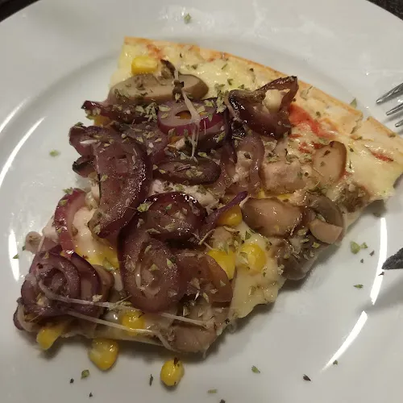
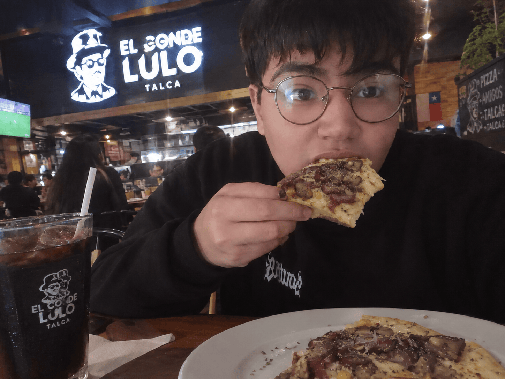
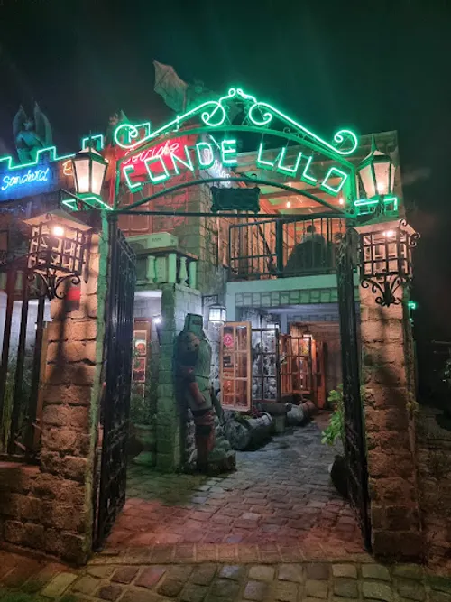

Pizza

Introduction
I tried this pizza at conde lulo, a cozy place in talcacity. It is a popular spot for families and friends who want a relaxed meal. The pizza is topped with mushrooms, sweet corn and red onion.

Description
The slice looks colorful and appetizing. The cheese is melted and golden, and the red onions are dark and caramelized. There is oregano on top, and it smells herby and slightly sweet. The crust is thin and crispy at the edge, and the taste is a mix of salty cheese, sweet corn and earthy mushrooms.

My Opinion
I really liked it because the flavors are balanced. The onions add sweetness, and the mushrooms give a rich, savory taste. However, the center of the slice was a little soft, and I would like a bit more sauce. The portion was generous and the price was fair. I would recommend it to anyone who enjoys vegetarian pizza